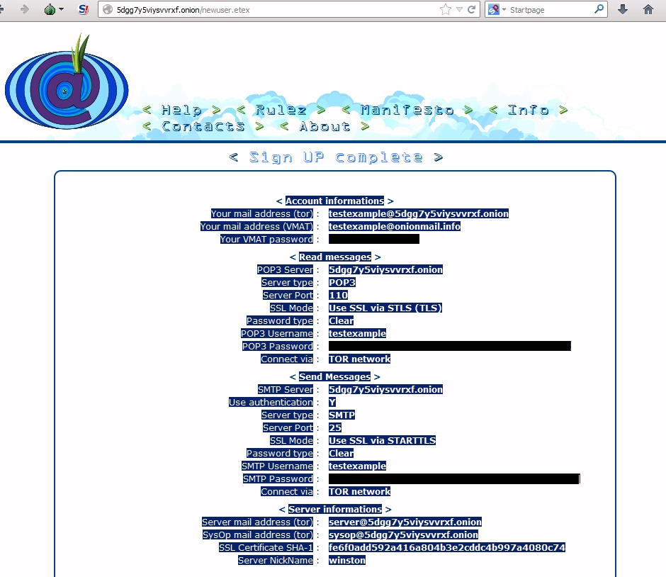
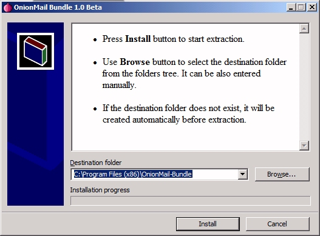
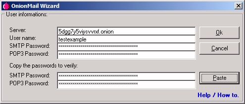
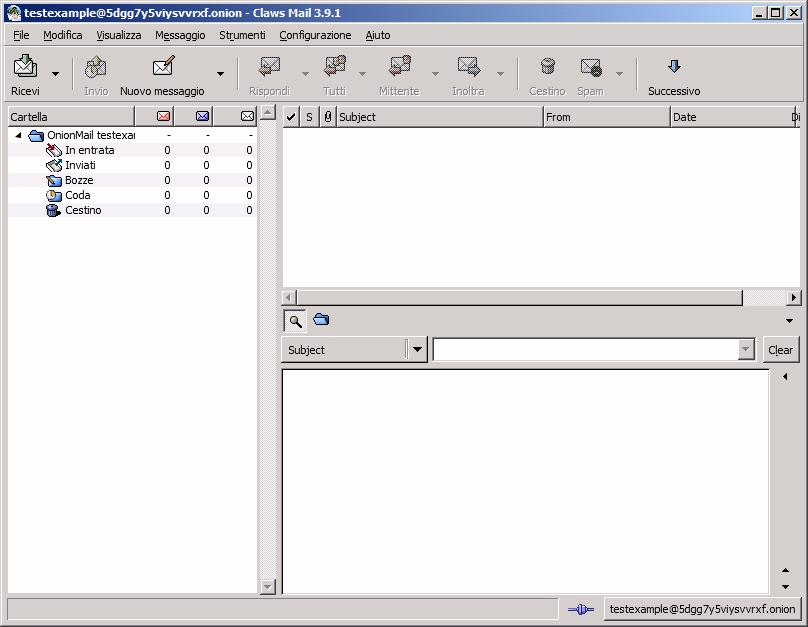
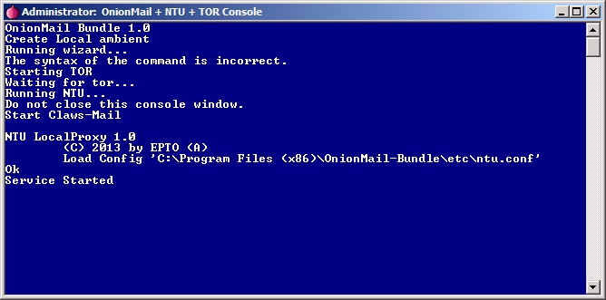
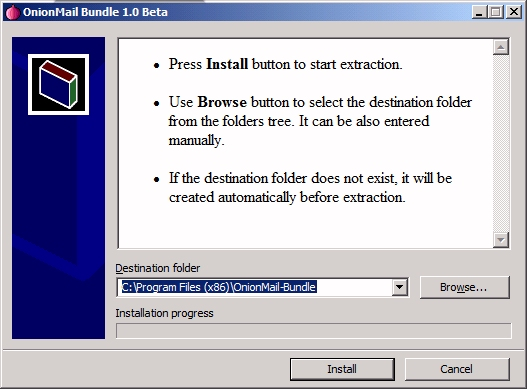
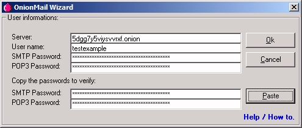
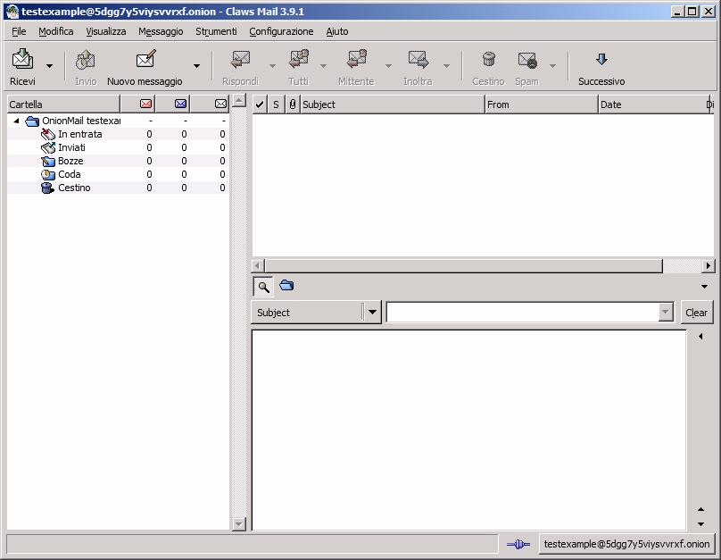
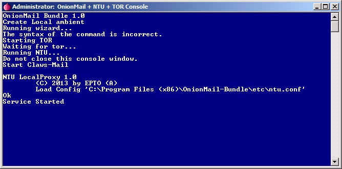

This is an unofficial wizard version to use OnionMail wizard in windows 7 (x64) / Windows XP.
- This bundle install some programs:
Claws-Mail, TOR, NTU, GnuPG, OnionMail Wizard.
It works in Windows and the source codes are included:
Source codes: Source code - Use Tor Browser:
https://torproject.org - Go to the OnionMail server directory.
- Select a server and sign in a new user, then copy to the clipboard all user's data.
- Run the wizard and use the button "Paste".

After subscription, select all text and copy it to the clipboard (CTRL+C).

Install the OnionMail Bundle
Click on OnionMail icon on your desktop.

Click on the "Paste" button.

Claws-Mail, TOR, GnuPG, NTU are configurated automatically.

Don't worry. This is the console of OnionMail and other programs.
After subscription, select all text and copy it to the clipboard (CTRL+C).

Install the OnionMail Bundle
Click on OnionMail icon on your desktop.

Click on the "Paste" button.

Claws-Mail, TOR, GnuPG, NTU are configurated automatically.

Don't worry. This is the console of OnionMail and other programs.